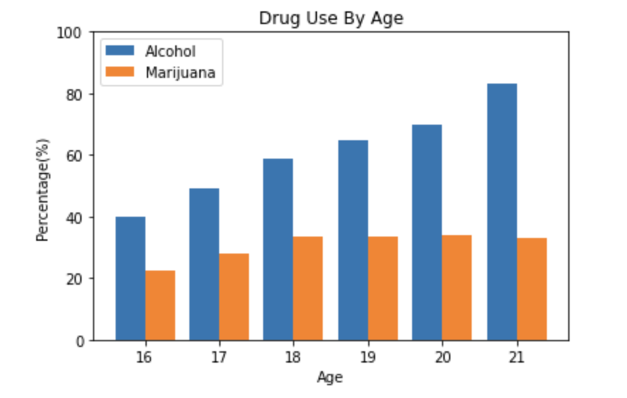

Marks
- Line: graphical element that represents the scale for “Electoral Votes Needed To Win”
- Area: graphical element that represents the map of the United States
Channels
- Color (Line)
- represents a categorical attribute (presidential candidate)
- use of color to represent a particular presidential candidate was an effective choice, seeing as it allows an individual to make an immediate deduction about which candidate we are referring to (mapping categorical attribute to color channel)
- Size (Line)
- represents a quantitative (sequential, ordered attribute) attribute (electoral votes needed to win)
- the use of size to represent the number of electoral votes cast for each presidential candidate was an effective choice, seeing as it allows the individual to quantify and interpret the proportion of votes cast for each candidate
- Color (Area)
- represents a categorical attribute (presidential candidate)
- the use of color to represent who each state voted for was an effective choice, seeing as it allows an individual to make an immediate deduction about which candidate each state supports (mapping categorical attribute to color channel)
- Shape (Area)
- represents categorical attribute (shape of each state)
- the use of shape to represent each state and ultimately make up the United State was effective as it displayed the geography of the country accurately
Colormap
- Categorical colormap was used to represent each presidential candidate and their respective political party.
- Again, it is being used to represent a categorical attribute (presidential candidate/political party) and is very effective seeing as the viewer immediately associates blue with Hillary Clinton (Democrats) and red with Donald Trump (Republicans).

Marks
- Points: graphical element that represents the linear weight (scoring value) of batted balls
Channels
- Color
- represents quantitative data (diverging, ordered attribute)
- the use of color to represent the scoring value of batted balls is effective, seeing as it allows the viewer to deduce if the particular data point is above or below the average as well as the magnitude (how strong the shade is)
- Position (Horizontal and Vertical)
- represents quantitative data (diverging, ordered attribute)
- the use of position (horizontal for exit velocity and vertical for launch angle) is effective, seeing as it allows the viewer to both interpret and estimate these values for a particular data point.
Colormap
- Divergent colormap used to represent the scoring value of batted balls (linear weight).
- Again, it is being used to represent quantitative (diverging) data. Essentially, it represents two extremes (above and below) surrounding the average scoring value and is very effective as the viewer immediately associates one color with either above or below average.

Marks
- Lines: graphical element that represents the percentage of individuals in an age group that use a certain drug
Channels
- Color
- represents a categorical attribute (type of drug)
- the use of color to represent a particular drug was an effective choice, seeing as it allows an individual to make an immediate deduction about which drug we are referring to
- Position (Horizontal and Vertical)
- both the horizontal and vertical channels represent ordered attributes (quantitative)
- the use of horizontal and vertical positions is effective, seeing as it allows the viewer to accurately identify the age and quantify the percentage values for the data
Colormap
- Categorical colormap used to represent the type of drug.
- Again, it is being used to represent quantitative (diverging) data. Again, it is being used to represent a categorical attribute (type of drug) and is very effective seeing as the viewer immediately associates blue with alcohol and orange with marijuana (as per the legend/key).